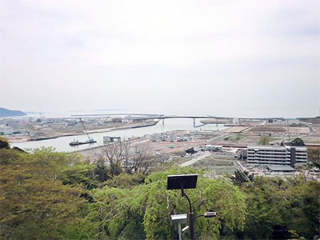

3.11を忘れない・・
みやぎ生協から被災地・宮城のいまをお伝えします
第58回 2018年6月5日
災害援護資金で生活再建を果たした利用者に寄り添う
災害援護資金（※）は、自治体が被災者に対し、生活を建て直すための資金を貸し付ける制度です。東日本大震災では、多くの被災者が制度を利用して生活再建を図りました。一方、昨年から償還（返済）が始まったことで様々な課題も浮上してきています。
石巻市は7年間で3,049世帯に約64億円の貸付を行ないました。1世帯当たり約210万円の貸付額です。返済は6年の猶予期間を過ぎたところから始まり、償還期間も借りた時から13年以内と決まっています。
石巻市生活再建支援課は、「納期を待たずに繰上償還をするなど、できるだけ早く返そうという動きがある一方で、“返せない”と言う方々も顕著化してきている」と話します。
“今の生活のなかで返していくのは難しい”といった相談が毎日寄せられることからも、まだ生活再建が終わっていない人や少ない収入で暮らさざるを得ない人が多数いることが分かります。
返済には一定額を年賦あるいは半年賦で納付する2つの方法が定められていますが、石巻市は経済的に困窮している利用者が一度に大金を用意するのは難しいだろうと考え、早い段階から月1回返済の少額償還を取り入れました。またコンビニ収納や口座振替など少しでも返しやすいように環境を整えています。
回収には相応のコストがかかります。また、貸したお金が返ってこない場合は、市が立て替えて県と国に返済をしなければなりません。「利用者の返済を免除するという方法もあるが、自治体としては借りた方と借りなかった方の間の公平性を保つことが重要。“減免になるならあの時借りておけばよかった”と不公平感を抱かれないように十分に注意したい」。
返済が困難な利用者への対応、長期にわたる回収の取り組み、行政としての公平性の確保。課題は山積ですが、市の生活再建支援課は、「災害援護資金を使い、やっとの思いで家を建てた方々が“お金を返せないから家を売る”とならないようにしたい。民間の貸付と違って福祉的な要素もある制度。最低限の生活だけは何とか維持できるような形で進めたい」と利用者に寄り添う姿勢を崩さずにいます。
※世帯主の負傷や住まい損壊で困窮した被災世帯に対し生活再建のために最大350万円を貸す制度。東日本大震災では無利子（保証人無しの場合は年1.5％）、償還期間13年（据置期間6年あるいは8年）等の特例が適用された。

▲石巻市日和山からの眺望。ゆっくりとですが復興が進んでいるのが分かります。
 前の記事 第57回「手仕事を事業として続ける難しさ 乗り越えるため新しいことに挑む喜び」（2018年5月5日）
前の記事 第57回「手仕事を事業として続ける難しさ 乗り越えるため新しいことに挑む喜び」（2018年5月5日）